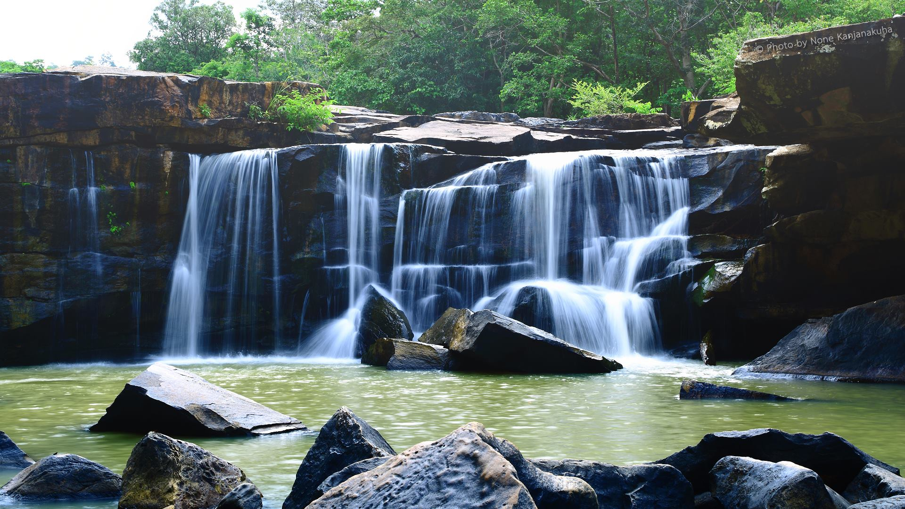

อุทยานแห่งชาติตาดโตนเป็นสถานที่ท่องเที่ยวที่นักท่องเที่ยวทั้งชาวจังหวัดชัยภูมิและคนต่างถิ่นรู้จักมานานแล้ว ที่นี่จึงมีนักท่องเที่ยวเดินทางมาเยือนอยู่ตลอดปี โดยเฉพาะในช่วงสงกรานต์ และวันขึ้นปีใหม่ หรือในช่วงเทศกาล เนื่องจากอยู่ไม่ไกลจากตัวเมืองและมีเส้นทางคมนาคมที่สะดวก สามารถขับรถมาเที่ยวแบบไปเช้าเย็นกลับจากตัวเมืองได้ รวมถึงยังมีบ้านพักที่สะดวกสบาย มีร้านอาหารสวัสดิการเปิดบริการหลายร้าน นักท่องเที่ยวส่วนใหญ่เลือกที่จะมาเที่ยวเล่นน้ำที่น้ำตกตาดโตน และปิกนิกริมลำธารใต้ต้นไม้ที่ร่มรื่น เป็นน้ำตกที่ไหลมาตามลำธารหินกว้าง ก่อนจะไหลตกลงหน้าผาอย่างสวยงาม จากลานจอดรถมีทางลาดยางให้คุณเดินเข้าไปชมน้ำตกระยะทางเพียง 500 เมตร ด้านเหนือน้ำตกเป็นลำธารซึ่งเป็นจุดที่นักท่องเที่ยวส่วนใหญ่เลือกลงเล่นน้ำอย่างสนุกสนาน หากคุณไม่อยากลงเล่นน้ำ บริเวณน้ำตกมีศาลาพักผ่อนและม้านั่งให้ได้ชมวิวน้ำตกด้วย น้ำตกตาดโตนจะสวยงามที่สุดประมาณเดือนมิถุนายน-กันยายน นอกจากน้ำตกตาดโตนแล้ว ยังมีน้ำตกที่น่าเที่ยวอยู่อีกแห่งหนึ่ง คือน้ำตกผาเอียง สายน้ำในลำธารที่ไหลมาตกลงหน้าผาหินที่ตั้งเอียงเฉียงกับลำธาร คุณสามารถเดินทางด้วยทางหลวงหมายเลข 2159 สายชัยภูมิ-หนองบัวแดง น้ำตกตั้งอยู่ที่บ้านชีลองเหนือ จะมีทางลาดยางเข้าไปยังลานจอดรถ จากนั้นเดินเท้าเข้าน้ำตกเพียง 800 เมตรเท่านั้น